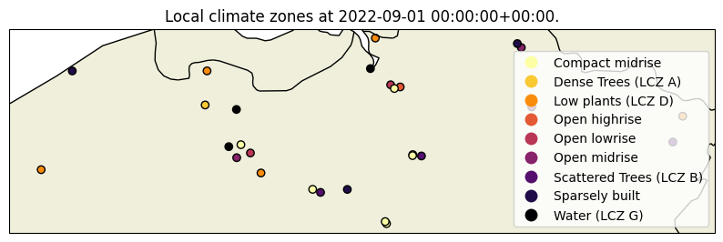

Demo example: Using a Google Earth engine#
This example is the continuation of the previous example: Using a Dataset. This example serves as a demonstration on how to get meta-data from the Google Earth Engine (GEE).
Before proceeding, make sure you have set up a Google developers account and a GEE project. See Using Google Earth Engine for a detailed description of this.
Create your Dataset#
Create a dataset with the demo data.
[1]:
import metobs_toolkit
your_dataset = metobs_toolkit.Dataset()
your_dataset.update_settings(
input_data_file=metobs_toolkit.demo_datafile, # path to the data file
input_metadata_file=metobs_toolkit.demo_metadatafile,
template_file=metobs_toolkit.demo_template,
)
your_dataset.import_data_from_file()
Extracting LCZ from GEE#
Here is an example of how to extract the Local Climate Zone (LCZ) information of your stations. First, we take a look at what is present in the metadata of the dataset.
[2]:
your_dataset.metadf.head()
[2]:
| network | lat | lon | call_name | location | geometry | lcz | assumed_import_frequency | dataset_resolution | |
|---|---|---|---|---|---|---|---|---|---|
| name | |||||||||
| vlinder01 | Vlinder | 50.980438 | 3.815763 | Proefhoeve | Melle | POINT (3.81576 50.98044) | NaN | 0 days 00:05:00 | 0 days 00:05:00 |
| vlinder02 | Vlinder | 51.022379 | 3.709695 | Sterre | Gent | POINT (3.70969 51.02238) | NaN | 0 days 00:05:00 | 0 days 00:05:00 |
| vlinder03 | Vlinder | 51.324583 | 4.952109 | Centrum | Turnhout | POINT (4.95211 51.32458) | NaN | 0 days 00:05:00 | 0 days 00:05:00 |
| vlinder04 | Vlinder | 51.335522 | 4.934732 | Stadsboerderij | Turnhout | POINT (4.93473 51.33552) | NaN | 0 days 00:05:00 | 0 days 00:05:00 |
| vlinder05 | Vlinder | 51.052655 | 3.675183 | Watersportbaan | Gent | POINT (3.67518 51.05266) | NaN | 0 days 00:05:00 | 0 days 00:05:00 |
To extract geospatial information for your stations, the lat and lon (latitude and longitude) of your stations must be present in the metadf. If so, than geospatial information will be extracted from GEE at these locations.
To extract the Local Climate Zones (LCZs) of your stations:
[3]:
lcz_values = your_dataset.get_lcz()
# The LCZs for all your stations are extracted
print(lcz_values)
name
vlinder01 Low plants (LCZ D)
vlinder02 Open midrise
vlinder03 Open midrise
vlinder04 Sparsely built
vlinder05 Water (LCZ G)
vlinder06 Scattered Trees (LCZ B)
vlinder07 Compact midrise
vlinder08 Compact midrise
vlinder09 Scattered Trees (LCZ B)
vlinder10 Compact midrise
vlinder11 Open lowrise
vlinder12 Open highrise
vlinder13 Compact midrise
vlinder14 Low plants (LCZ D)
vlinder15 Sparsely built
vlinder16 Water (LCZ G)
vlinder17 Scattered Trees (LCZ B)
vlinder18 Low plants (LCZ D)
vlinder19 Compact midrise
vlinder20 Compact midrise
vlinder21 Sparsely built
vlinder22 Low plants (LCZ D)
vlinder23 Low plants (LCZ D)
vlinder24 Dense Trees (LCZ A)
vlinder25 Water (LCZ G)
vlinder26 Open midrise
vlinder27 Compact midrise
vlinder28 Open lowrise
Name: lcz, dtype: object
The first time, in each session, you are asked to authenticated by Google. Select your Google account and billing project that you have set up and accept the terms of the condition.
NOTE: For small data-requests the read-only scopes are sufficient, for large data-requests this is insufficient because the data will be written directly to your Google Drive.
The metadata of your dataset is also updated
[4]:
print(your_dataset.metadf['lcz'].head())
name
vlinder01 Low plants (LCZ D)
vlinder02 Open midrise
vlinder03 Open midrise
vlinder04 Sparsely built
vlinder05 Water (LCZ G)
Name: lcz, dtype: object
To make a geospatial plot you can use the following method:
[5]:
your_dataset.make_geo_plot(variable="lcz")
[5]:
<GeoAxes: title={'center': 'Local climate zones at 2022-09-01 00:00:00+00:00.'}>

Extracting other Geospatial information#
Similar as LCZ extraction you can extract the altitude of the stations (from a digital elevation model):
[6]:
altitudes = your_dataset.get_altitude() #The altitudes are in meters above sea level.
print(altitudes)
name
vlinder01 12
vlinder02 7
vlinder03 30
vlinder04 25
vlinder05 0
vlinder06 0
vlinder07 7
vlinder08 7
vlinder09 19
vlinder10 14
vlinder11 6
vlinder12 9
vlinder13 10
vlinder14 4
vlinder15 41
vlinder16 4
vlinder17 83
vlinder18 35
vlinder19 75
vlinder20 44
vlinder21 19
vlinder22 3
vlinder23 1
vlinder24 12
vlinder25 12
vlinder26 24
vlinder27 12
vlinder28 7
Name: altitude, dtype: int64
A more detailed description of the landcover/land use in the microenvironment can be extracted in the form of landcover fractions in a circular buffer for each station.
You can select to aggregate the landcover classes to water - pervious and impervious, or set aggregation to false to extract the landcover classes as present in the worldcover_10m dataset.
[7]:
aggregated_landcover = your_dataset.get_landcover(
buffers=[100, 250], # a list of buffer radii in meters
aggregate=True #if True, aggregate landcover classes to the water, pervious and impervious.
)
print(aggregated_landcover)
water pervious impervious
name buffer_radius
vlinder01 100 0.000000 0.981781 0.018219
250 0.000000 0.963635 0.036365
vlinder02 100 0.000000 0.428769 0.571231
250 0.000000 0.535944 0.464056
vlinder03 100 0.000000 0.245454 0.754546
250 0.000000 0.160831 0.839169
vlinder04 100 0.000000 0.979569 0.020431
250 0.000000 0.881948 0.118052
vlinder05 100 0.446604 0.224871 0.328525
250 0.242406 0.526977 0.230617
vlinder06 100 0.000000 1.000000 0.000000
250 0.000000 0.995819 0.004181
vlinder07 100 0.000000 0.433034 0.566966
250 0.002911 0.149681 0.847407
vlinder08 100 0.000000 0.029552 0.970448
250 0.002911 0.030423 0.966666
vlinder09 100 0.000000 1.000000 0.000000
250 0.000000 0.974895 0.025105
vlinder10 100 0.000000 0.129686 0.870314
250 0.000000 0.125173 0.874827
vlinder11 100 0.000000 0.273457 0.726543
250 0.000000 0.204337 0.795663
vlinder12 100 0.000000 0.803321 0.196679
250 0.004188 0.313829 0.681983
vlinder13 100 0.000000 0.006042 0.993958
250 0.000000 0.044648 0.955352
vlinder14 100 0.000000 0.803469 0.196531
250 0.000000 0.835386 0.164614
vlinder15 100 0.000000 0.798196 0.201804
250 0.000000 0.918644 0.081356
vlinder16 100 0.367579 0.232926 0.399495
250 0.448841 0.217178 0.333981
vlinder17 100 0.000000 0.989899 0.010101
250 0.000000 0.980923 0.019077
vlinder18 100 0.000000 1.000000 0.000000
250 0.000000 1.000000 0.000000
vlinder19 100 0.000000 0.447270 0.552730
250 0.000000 0.343485 0.656515
vlinder20 100 0.000000 0.129964 0.870036
250 0.000000 0.039639 0.960361
vlinder21 100 0.000000 1.000000 0.000000
250 0.000487 0.962068 0.037445
vlinder22 100 0.973231 0.026769 0.000000
250 0.884010 0.115990 0.000000
vlinder23 100 0.399503 0.600497 0.000000
250 0.272793 0.712724 0.014483
vlinder24 100 0.000000 0.960773 0.039227
250 0.000000 0.946138 0.053862
vlinder25 100 0.790001 0.152027 0.057972
250 0.899936 0.063972 0.036092
vlinder26 100 0.000000 0.148975 0.851025
250 0.000000 0.174383 0.825617
vlinder27 100 0.000000 0.011601 0.988399
250 0.018481 0.084840 0.896679
vlinder28 100 0.000000 0.489951 0.510049
250 0.000000 0.721950 0.278050
Extracting ERA5 timeseries#
The toolkit has built-in functionality to extract ERA5 time series at the station locations. The ERA5 data will be stored in a Modeldata instance. Here is an example on how to get the ERA5 time series by using the get_modeldata() method.
[8]:
#Get the ERA5 data for a single station (to reduce data transfer)
your_station = your_dataset.get_station('vlinder02')
#Extract time series at the location of the station
ERA5_data = your_station.get_modeldata(modelname='ERA5_hourly',
obstype='temp',
startdt=None, #if None, the start of the observations is used
enddt=None, #if None, the end of the observations is used
)
#Get info
print(ERA5_data)
ERA5_data.make_plot(obstype_model='temp',
dataset=your_station, #add the observations to the same plot
obstype_dataset='temp')
(When using the .set_model_from_csv() method, make sure the modelname of your Modeldata is ERA5_hourly)
Modeldata instance containing:
* Modelname: ERA5_hourly
* 1 timeseries
* The following obstypes are available: ['temp']
* Data has these units: ['Celsius']
* From 2022-09-01 00:00:00+00:00 --> 2022-09-16 00:00:00+00:00 (with tz=UTC)
(Data is stored in the .df attribute)
GEE data transfer#
There is a limit to the amount of data that can be transfered directly from GEE. When the data cannot be transferred directly, it will be written to a file on your Google Drive. The location of the file will be printed out. When the writing to the file is done, you must download the file and import it to an empty Modeldata instance using the set_model_from_csv() method.
[9]:
#Illustration
#Extract time series at the locations all the station
ERA5_data = your_dataset.get_modeldata(modelname='ERA5_hourly',
obstype='temp',
startdt=None, #if None, the start of the observations is used
enddt=None, #if None, the end of the observations is used
)
#Because the data amount is too large, it will be written to a file on your Google Drive! The returned Modeldata is empty.
print(ERA5_data)
THE DATA AMOUT IS TO LAREGE FOR INTERACTIVE SESSION, THE DATA WILL BE EXPORTED TO YOUR GOOGLE DRIVE!
The timeseries will be written to your Drive in era5_timeseries/era5_data
The data is transfered! Open the following link in your browser:
https://drive.google.com/#folders/1iSjU6u-kFeRS_YikiyaPoc09SNbmvvO1
To upload the data to the model, use the Modeldata.set_model_from_csv() method
(When using the .set_model_from_csv() method, make sure the modelname of your Modeldata is ERA5_hourly)
Empty Modeldata instance.
[10]:
#See the output to find the modeldata in your Google Drive, and download the file.
#Update the empty Modeldata with the data from the file
#ERA5_data.set_model_from_csv(csvpath='/home/..../era5_data.csv') #The path to the downloaded file
#print(ERA5_data)
Interactive plotting of a GEE dataset#
You can make an interactive spatial plot to visualize the stations spatially by using the make_gee_plot().
[11]:
spatial_map = your_dataset.make_gee_plot(gee_map='worldcover')
spatial_map
[11]: